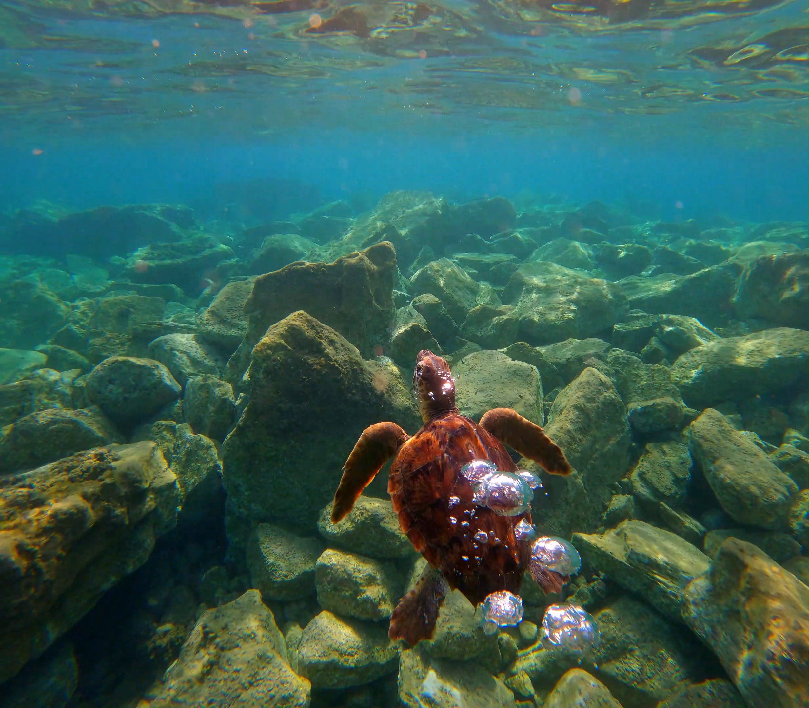
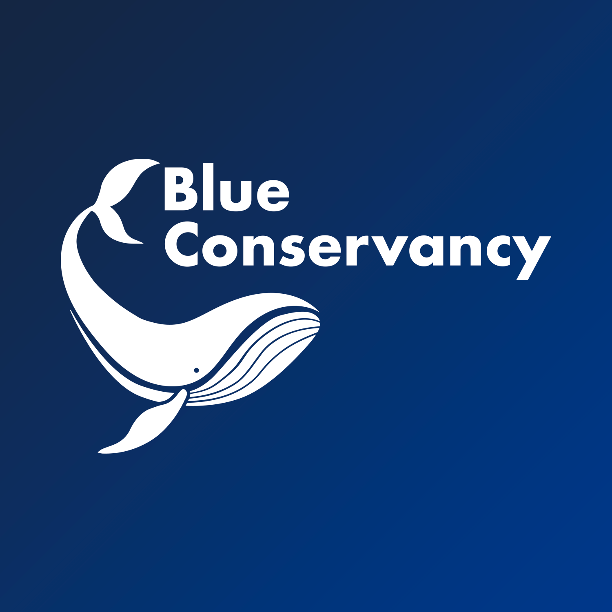

I completed a Sea Turtle Conservation Internship at Blue Conservancy – Marine Turtle Rescue Centre (CRTM) in Brancaleone, Calabria, one of Italy's leading organisations dedicated to sea turtle conservation, rehabilitation and environmental education.
This immersive internship combined marine conservation, animal rehabilitation, public outreach, field ecology, marine biodiversity monitoring and scientific communication. Over the course of two months, I participated in all aspects of the Rescue Centre's operations, gaining hands-on experience in sea turtle care, rescue operations, public engagement and marine biodiversity surveys.
Blue Conservancy – Marine Turtle Rescue Centre (CRTM)
July – September 2024
Sea Turtle Conservation Intern
Sea turtle rehabilitation, marine biodiversity, environmental education, marine conservation
I participated in biodiversity surveys using BRUV (Baited Remote Underwater Video systems), a non-invasive technique for monitoring marine biodiversity.
What BRUVs are: A video camera mounted on a frame with a baited arm, deployed on the seabed to attract and record marine organisms.
Why they are used: They provide standardised, non-destructive data on fish assemblages, relative abundance and species diversity.
Advantages: Non-invasive, repeatable, cost-effective, allows monitoring of elusive species, provides permanent visual records.
Importance: BRUVs are essential for marine protected area monitoring, impact assessments and understanding fishing pressure on ecosystems.
Response to distressed turtles reported by fishermen or coastal authorities
Safe transfer to the CRTM for initial health assessment
Veterinary examination, diagnostics and treatment planning
Feeding, medication, water quality monitoring and daily care
Regular health checks, behaviour observation and recovery tracking
Final health clearance and return to the marine environment
This internship was a pivotal experience in my journey as a marine biologist. Working directly with rescued sea turtles and seeing the tangible impact of conservation efforts strengthened my commitment to marine conservation and biodiversity research.
I gained a deeper understanding of the interconnection between scientific research, conservation action and public engagement. The experience of explaining marine conservation issues to visitors from around the world – in both Italian and English – honed my communication skills and reinforced the importance of outreach in protecting marine ecosystems.
This experience also shaped my later academic path. The hands-on conservation work I did at Blue Conservancy directly informed my Master's research on meiofaunal biodiversity and seagrass ecosystems, as well as my current post-graduate research on nematode assemblages. It showed me that conservation requires both rigorous science and effective communication to translate research into meaningful action.
Interested in marine conservation, biodiversity monitoring or collaborative research?
Feel free to contact me — I'm always open to new opportunities and collaborations.
Get in Touch